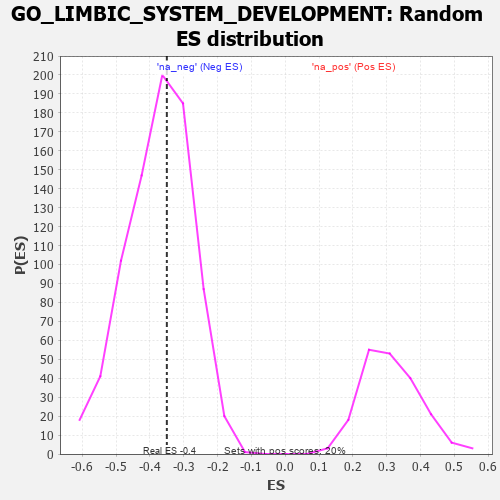

| | | Dataset | 7d |
| Phenotype | NoPhenotypeAvailable |
| Upregulated in class | na_neg |
| GeneSet | GO_LIMBIC_SYSTEM_DEVELOPMENT |
| Enrichment Score (ES) | -0.35014367 |
| Normalized Enrichment Score (NES) | -0.9387438 |
| Nominal p-value | 0.56803995 |
| FDR q-value | 0.9198602 |
| FWER p-Value | 1.0 |
Table: GSEA Results Summary
 Fig 1: Enrichment plot: GO_LIMBIC_SYSTEM_DEVELOPMENT
Fig 1: Enrichment plot: GO_LIMBIC_SYSTEM_DEVELOPMENT
Profile of the Running ES Score & Positions of GeneSet Members on the Rank Ordered List
| PROBE | GENE SYMBOL | GENE_TITLE | RANK IN GENE LIST | RANK METRIC SCORE | RUNNING ES | CORE ENRICHMENT | | 1 | EMX2 | | | 117 | 1.451 | 0.0824 | No |
| 2 | BAX | | | 387 | 0.711 | 0.0962 | No |
| 3 | SRF | | | 542 | 0.615 | 0.1179 | No |
| 4 | UBA6 | | | 2114 | 0.289 | -0.0605 | No |
| 5 | OTP | | | 2209 | 0.275 | -0.0539 | No |
| 6 | XRCC1 | | | 2287 | 0.262 | -0.0460 | No |
| 7 | NR2E1 | | | 2844 | 0.177 | -0.1042 | No |
| 8 | FGFR2 | | | 2895 | 0.167 | -0.0993 | No |
| 9 | LEF1 | | | 3037 | 0.144 | -0.1074 | No |
| 10 | FEZ1 | | | 3055 | 0.142 | -0.1000 | No |
| 11 | HDAC1 | | | 3086 | 0.138 | -0.0945 | No |
| 12 | CDK5 | | | 3480 | 0.080 | -0.1386 | No |
| 13 | NF1 | | | 3713 | 0.040 | -0.1651 | No |
| 14 | CRK | | | 4139 | -0.031 | -0.2166 | No |
| 15 | LHX5 | | | 4332 | -0.066 | -0.2363 | No |
| 16 | LMX1A | | | 4631 | -0.124 | -0.2655 | No |
| 17 | DRD2 | | | 5088 | -0.221 | -0.3081 | No |
| 18 | SMO | | | 5195 | -0.247 | -0.3050 | No |
| 19 | PTEN | | | 5262 | -0.261 | -0.2958 | No |
| 20 | FGFR1 | | | 5543 | -0.332 | -0.3088 | No |
| 21 | BBS4 | | | 5806 | -0.407 | -0.3145 | No |
| 22 | UBB | | | 6090 | -0.503 | -0.3165 | Yes |
| 23 | FEZF2 | | | 6150 | -0.519 | -0.2891 | Yes |
| 24 | BBS2 | | | 6383 | -0.608 | -0.2777 | Yes |
| 25 | PTPRS | | | 6646 | -0.738 | -0.2612 | Yes |
| 26 | GSK3B | | | 6719 | -0.768 | -0.2188 | Yes |
| 27 | LRP8 | | | 6931 | -0.889 | -0.1859 | Yes |
| 28 | XRN2 | | | 7488 | -1.384 | -0.1632 | Yes |
| 29 | DCLK2 | | | 7529 | -1.439 | -0.0719 | Yes |
| 30 | CASP3 | | | 7747 | -1.902 | 0.0282 | Yes |
Table: GSEA details [plain text format]

Fig 2: GO_LIMBIC_SYSTEM_DEVELOPMENT: Random ES distribution
Gene set null distribution of ES for GO_LIMBIC_SYSTEM_DEVELOPMENT